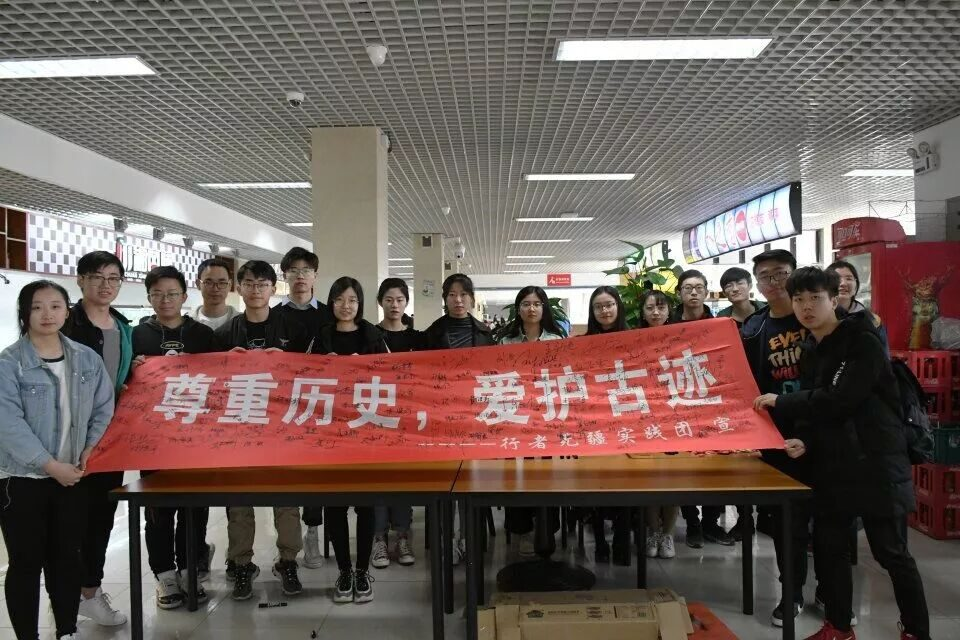
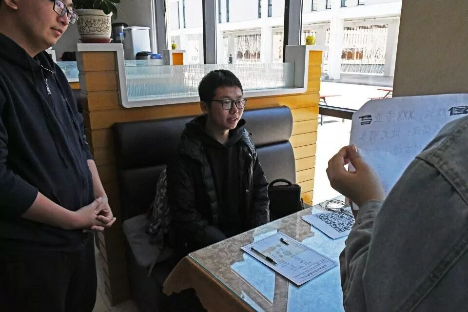
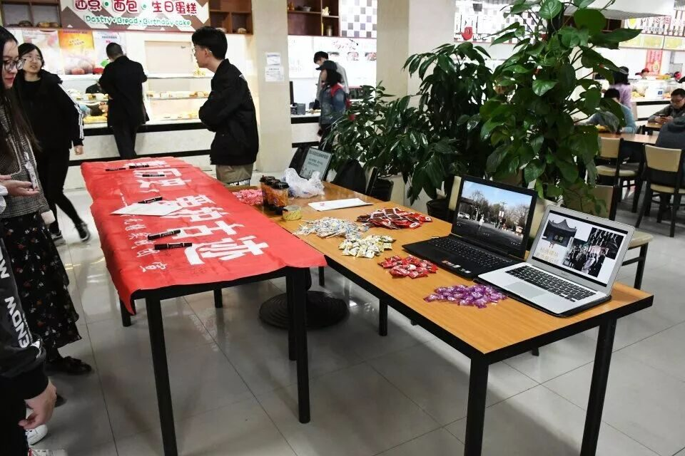
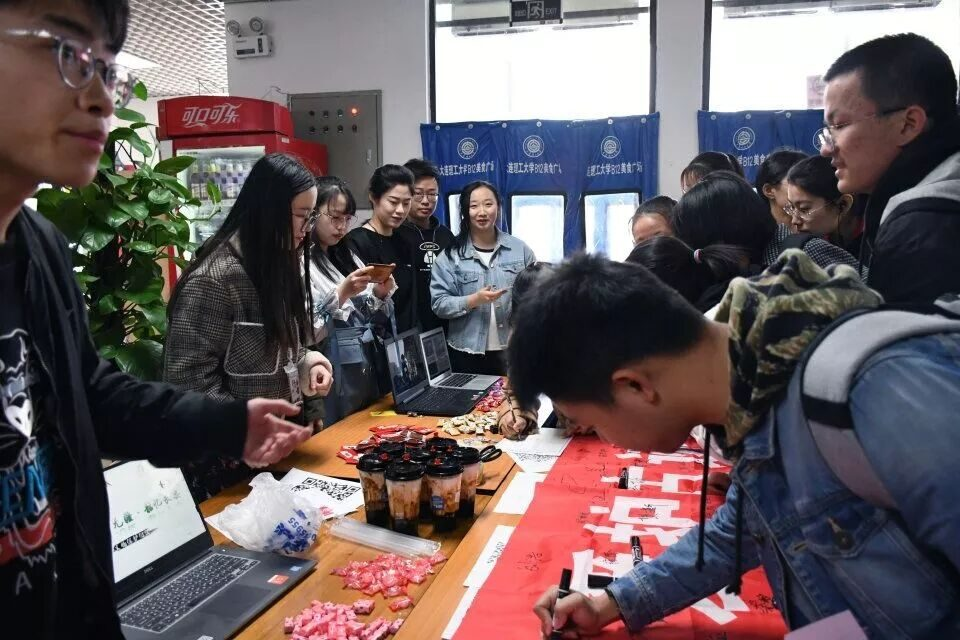
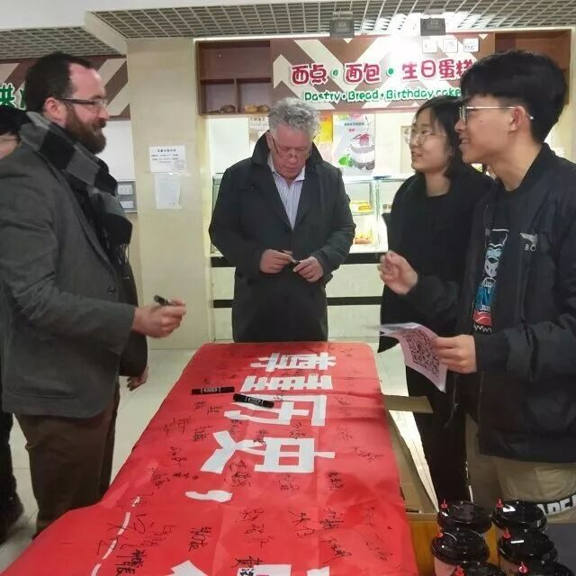

校园倡议丨振臂高呼，护文物于微时


文物是祖先留给我们的宝贵财富，它凝聚了数千年人类辛勤的劳动和无穷的智慧，是民族精神文化的标志，它对人类的文明与进步起着不可估量的作用。其历经多年风雨变幻，战火洗礼而留存至今实属不易。文物保护已逐渐走进大众视野，文物保护机制也日趋完善，但仍然面临诸多考验：文物遭受人为破坏、群众对于历史的谣传、景区商业化、现有技术无法提供足够的保护措施等问题，我们祖先留下来的古迹遗址正受到越来越严重的威胁。因此，文物保护，刻不容缓。



2019年3月，怀揣着一份誓要为保护文物贡献一份力量的坚定信念，行者们已在校外通过抖音等渠道录制了倡议视频，共72位高校学子参与。
2019年4月3日（本周三）在B12大厅，终于我们开展了校内的倡议活动

前期我们已通过各个渠道开始倡议活动的宣传，本次倡议活动的口号为：“做文明参观者，爱护古迹，监督身边不文明行为，为古迹保护贡献一份力量”我们提前准备好一个条幅，并承诺凡是在条幅上签名，或协助录制倡议视频，参与本次倡议活动的师生，都可领取行者们精心准备的小礼物。

本次活动于11:30正式开始，行者们提前两个小时便到B12准备，摆好条幅和奖品，并用电脑播放行者无疆的采访视频和宣传幻灯片。

活动准时开始，活动的参与度比我们想象中的还要好，12大厅人声鼎沸，同学们都积极参与，条幅上签着的一个个名字表达了大家保护文物的热忱和决心，一份份视频的录制也让我们看到了大工师生对文物遗址和传统文化的重视

在本次倡议活动中，共有27人签署古迹保护协议并参与视频录制。上百余人次参与倡议横条姓名签署，其中更有外国助教参与进来，我们深感欣慰。

文物是不可再生的，一梁一柱，一碑一刻，一砖一石，无不凝聚着先人的智慧，留存着沉淀了千百年的历史文明。保护好文物，才能丰厚中华文化的底蕴，千年古城才不枉为口谈，旅游开发才有落脚之地，起航之点，才不至于丢失华夏文明的根基。
让我们行动起来，为文物保护发声，一个人的力量也许薄弱，但大家共同努力必能连点成线，成为一股强大的力量。

来源丨行者无疆实践团
文字丨郭新明
排版丨牛直达
审核丨潘雯雯 邓子孚
行者无疆实践团
QQ：2758025831

随行者一起认识世界
长按二维码关注